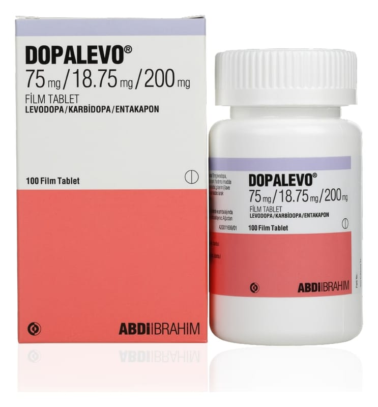

Dopalevo 75 mg/18,75 mg/200 mg Film Kaplı Tablet ,100 Tablet

Ne için kullanılır
KT · Bölüm 1; Bir DOPALEVO film kaplı tablette üç etkin madde bulunmaktadır. Her bir film tablet, etkin | madde olarak, Parkinson hastalığının tedavisinde kullanılan levodopa ve levodopanın : Parkinson hastalığını tedavi edici etkilerini artıran karbidopa ve entakapon içerir.
; DOPALEVO, anti-Parkinson dopaminerjik ilaç olarak adlandırılan bir ilaç sınıfına dahildir. | Doktorunuz DOPALEVO'yu size Parkinson hastalığınızı tedavi etmek amacıyla vermiş ; bulunmaktadır.
; Parkinson hastalığı, sinir sisteminde meydana gelen bir bozukluktur. Bu hastalık, beyinde | üretilen doğal bir madde olan dopaminin eksikliğinden kaynaklanmaktadır. Dopamin, beynin : kas hareketlerini kontrol eden kısmında mesajları iletir. Dopamin çok az üretiliyorsa, | hareketlerle ilgili sorunlar ortaya çıkar.
| Levodopa, beyindeki dopamin düzeyini yükselterek etki gösterir.
|
| 1/9
: DOPALEVO, Parkinson hastalığında normal günlük işlerin yerine getirilmesini zorlaştıran, el : ve ayakların titremesi, vücut katılığı ve hareketlerdeki yavaşlama gibi belirtilerin : hafifletilmesine yardımcı olur.
Bu durumun tedavisi için size başka ilaçlar da verilebilir.
| Bu ilacın nasıl etki gösterdiği ya da size neden verildiği konusunda sorularınız varsa lütfen ; doktorunuza danışınız.